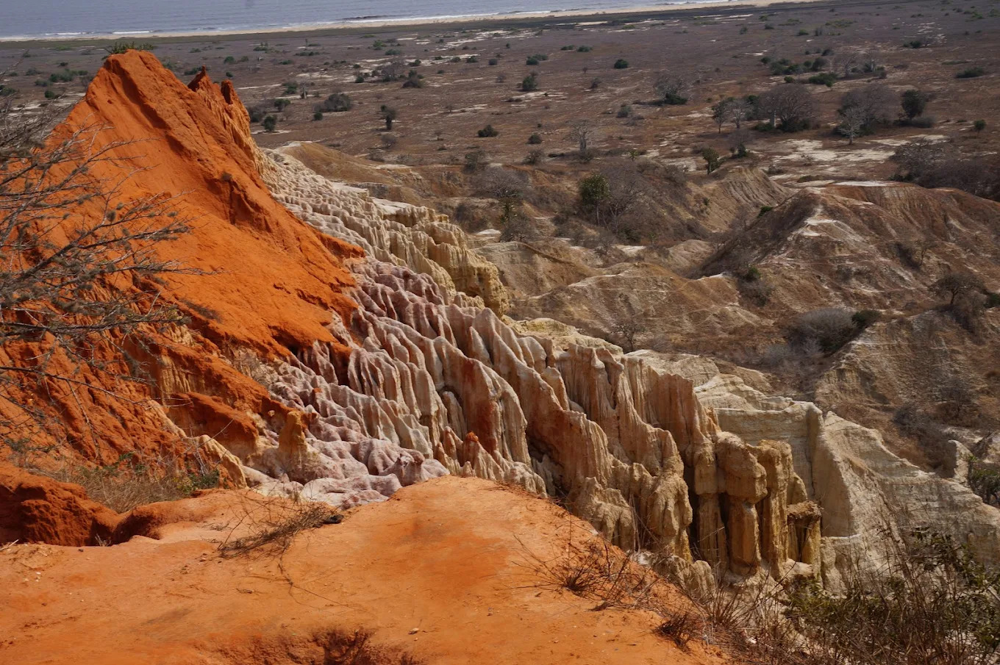

Luanda
The capital and largest city of Angola, with a population of more than 10 million inhabitants. Luanda has a hot semi-desert climate, bordering upon a hot desert climate. The climate is warm to hot but surprisingly dry, owing to the cool Benguela Current, which prevents moisture from easily condensing into rain. Check out some photos of the city, its islands, and monuments below. These are just some of the places in Luanda that you definitely should get to know.

